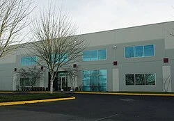

Sobre Estúdio Laika, LLC
Laika, LLC é um estúdio americano independente de animação em stop-motion especializado em longas-metragens, conteúdo comercial para todas as mídias, videoclipes e curtas-metragens. O estúdio é mais conhecido por seus longas-metragens em stop-motion Coraline, ParaNorman, The Boxtrolls, Kubo and the Two Strings, Missing Link e um próximo filme Wildwood. É propriedade do cofundador da Nike, Phil Knight, e está localizado em Hillsboro, Oregon, parte da área metropolitana de Portland. Filho de Knight, Travis Knight, atua como presidente e CEO da Laika.

História
No final da década de 1990, a Will Vinton Studios, conhecida por seus filmes e comerciais em stop motion, buscou fundos para mais longas-metragens e atraiu investidores externos, entre eles a Nike, Inc. proprietário Phil Knight, cujo filho Travis Knight trabalhou no estúdio como animador. Em 1998, Knight fez seu investimento inicial Em 2002,Phil Knight adquiriu o Will Vinton Studios, em dificuldades financeiras, para se dedicar a produções de longa-metragem. No ano seguinte, Henry Selick, diretor de The Nightmare Before Christmas, ingressou no estúdio como diretor supervisor. Em julho de 2005, o Will Vinton Studios foi renomeado como Laika – em homenagem a Laika, a cadela enviada ao espaço pela União Soviética em 1957.
Abriu duas divisões: Laika Entertainment para longas-metragens e Laika/house para trabalhos comerciais, como anúncios e videoclipes. O estúdio também anunciou seus primeiros projetos, o filme stop-motion Coraline e o filme de animação CGI Jack & Ben's Animated Adventure.
O estúdio demitiu uma parte significativa de sua equipe em 2008, quando seu segundo longa planejado, Jack & Ben's Animated Adventure, foi cancelado. No ano seguinte, o estúdio lançou seu primeiro longa-metragem, Coraline, dirigido por Selick, que recebeu uma indicação ao Oscar de Melhor Filme de Animação, uma indicação ao BAFTA de Melhor Filme de Animação, uma indicação ao Globo de Ouro de Melhor Filme de Animação e oito indicações ao Annie Awards, ganhando três, de Melhor Música em Filme de Animação, e Melhor Design de Personagem e Design de Produção em uma Produção de Longa-Metragem.
Depois de dirigir Moongirl e Coraline, mas sem sucesso na renegociação de seu contrato, Selick deixou Laika em 2009. No final do ano, o estúdio demitiu mais funcionários de seu departamento de animação por computador para se concentrar exclusivamente no stop-motion.
Seu segundo longa-metragem em stop-motion, ParaNorman, dirigido por Sam Fell e Chris Butler, estreou em 17 de agosto de 2012. Recebeu uma indicação ao Oscar de Melhor Filme de Animação, bem como uma indicação de Melhor Filme de Animação no BAFTAs, e oito indicações no Annie Awards, ganhando duas, para Animação de Personagens e Design de Personagens em Produção de Filme de Animação.
Depois de trabalhar em comerciais em stop-motion para clientes como Apple Inc., Fox Sports, ESPN e Coca-Cola, Laika desmembrou sua parte publicitária em julho de 2014, para se concentrar exclusivamente na produção de longas-metragens. A nova divisão comercial independente agora se chama HouseSpecial.
Seu terceiro filme, The Boxtrolls, foi lançado em 26 de setembro de 2014. Foi baseado no romance de aventura e fantasia de Alan Snow, Here Be Monsters!, e foi dirigido por Anthony Stacchi e Graham Annable. Recebeu uma indicação ao Oscar de Melhor Filme de Animação, uma indicação ao Globo de Ouro de Melhor Filme de Animação e nove indicações ao Annie Awards, vencendo duas, por Dublagem e Design de Produção em Produção de Filme de Animação.
Seu quarto filme, Kubo and the Two Strings, dirigido por Travis Knight, foi lançado em 19 de agosto de 2016. Recebeu duas indicações ao Oscar, de Melhor Filme de Animação e Melhores Efeitos Visuais (sendo apenas o segundo filme de animação a receber essa indicação, depois de O Estranho Mundo de Jack). Ganhou o BAFTA de Melhor Filme de Animação. Também recebeu uma indicação de Melhor Filme de Animação no Globo de Ouro e dez indicações no Annie Awards, vencendo três: Animação de Personagens, Design de Produção e Editorial em Produção de Longa-Metragem.
Laika considerou o livro de fantasia de Philip Reeve, Goblins, para uma potencial adaptação para o cinema.
Em março de 2015, a empresa anunciou sua intenção de expandir seu espaço de estúdio, visando produzir um filme por ano.
Seu quinto filme, Missing Link, dirigido por Chris Butler, foi lançado em 12 de abril de 2019. Recebeu uma indicação ao Oscar de Melhor Filme de Animação e oito indicações ao Annie Awards. Também ganhou um Globo de Ouro de Melhor Filme de Animação.
Em 8 de fevereiro de 2021, Laika assinou um contrato de distribuição com a Shout! Fábrica para os Estados Unidos, cobrindo os quatro primeiros filmes do estúdio. Em setembro daquele ano, também foi confirmado que o estúdio está atualmente trabalhando em seu sexto filme de animação em stop-motion, Wildwood, após o filme ter sido anunciado originalmente em 2011. O filme é baseado em um romance de Colin Meloy e dirigido por Travis Knight e está previsto para ser lançado em 2026. É o primeiro filme do estúdio com classificação PG-13.
Em 27 de abril de 2022, um novo filme stop-motion de Laika intitulado The Night Gardener foi anunciado como estando em andamento, baseado em uma história original do criador de Ozark, Bill Dubuque, com Travis Knight definido para dirigir.
Em maio de 2024, foi anunciado que Laika: Frame x Frame, uma exposição que mostra "a arte, a ciência e a magia inovadora dos filmes épicos do estúdio", seria realizada entre agosto e outubro de 2024 no BFI Southbank, em Londres, como parte de uma temporada de stop-motion apoiada pelo estúdio. Em junho de 2024, foi anunciado que Laika havia adquirido os direitos para adaptar o romance Piranesi, de Susanna Clarke, para um longa-metragem de animação, a ser dirigido por Travis Knight.
Filmes da Laika Studios
| Título | Data de lançamento | Diretor(es) | Escritor(es) | Produtor(es) | Compositor | Distribuidora |
|---|---|---|---|---|---|---|
| Coraline | 6 de fevereiro de 2009 | Henry Selick | Baseado no livro de Neil Gaiman. Roteiro: Henry Selick |
Bill Mechanic Claire Jennings Henry Selick Mary Sandell |
Bruno Coulais | Focus Features Pandemonium Films |
| ParaNorman | 17 de agosto de 2012 | Sam Fell Chris Butler |
Chris Butler | Arianne Sutner Travis Knight |
Jon Brion | Focus Features |
| Os Boxtrolls | 26 de setembro de 2014 | Graham Annable Anthony Stacchi |
Baseado no livro de Alan Snow. Roteiro: Irena Brignull e Adam Pava |
David Bleiman Ichioka Travis Knight |
Dario Marianelli | Focus Features |
| Kubo e as Duas Cordas | 19 de agosto de 2016 | Travis Knight | História: Shannon Tindle e Marc Haimes. Roteiro: Marc Haimes e Chris Butler |
Arianne Sutner Travis Knight |
Dario Marianelli | Focus Features |
| Elo Perdido | 12 de abril de 2019 | Chris Butler | Chris Butler | Arianne Sutner Travis Knight |
Carter Burwell | United Artists Releasing / Annapurna Pictures (EUA) AGC International (internacional) |
| Wildwood | 23 de outubro de 2026 | Travis Knight | Baseado no romance de Colin Meloy, ilustrado por Carson Ellis. Roteiro: Chris Butler |
Travis Knight Sam Wilson |
Dario Marianelli | Fathom Entertainment (EUA) FilmNation Entertainment (internacional) |